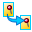

Modify a generative study
You can review and modify an existing generative design study using a variety of commands on the ribbon and on the shortcut menu in the Generative Design pane.
Select a study to modify
If there are multiple studies created for the same design body, then you must make the study you want to review or modify the active study.
The current (active) study name is shown in blue text at the top of the Generative Design pane.
|
To |
Do this |
|
Activate a different study. |
|
|
Work with multiple studies. |
In the Generative Design pane, click
|
|
Page through individual studies. |
Click these buttons:
|
|
Display study inputs. |
Right-click a study object or container in the Generative Design pane, and choose from the following:
|
 to change the study display mode.
to change the study display mode.

 Show Next
Show Next  Show Previous
Show PreviousModify the study inputs and reprocess
A study that has out-of-date inputs is listed in the Generative Design pane with a clock symbol:

|
To |
Do this |
|
Quickly review settings and values for individual generative design study objects. |
In the Generative Design pane, hover over a study name, region, load, or constraint to view the data tip. Example:
|
|
Change the study name. |
Right-click a study name and choose Rename. |
|
Change the study material. |
In the Generative Design pane:
|
|
Show and hide loads and constraints in the graphics window. |
Do either of the following:
|
|
Edit a load, constraint, or region. |
In the Generative Design pane, in the Loads or Constraints group, double-click the load or constraint name, for example, Fixed 1 or Force 1.
Tip:
You also can use this technique to edit other study inputs, such as a region or the material. |
|
Make symbols easier to see. |
|
|
Create a new load, constraint, or region. |
Right-click the Loads group or the Constraints group in the Generative Design pane, and then select the shortcut commands to create a new load or constraint. |
|
Copy a load, constraint, or region. |
Ctrl+drag a load, constraint, or region within the study to create a new object in the appropriate location within the study. |
|
Delete a load or constraint. |
Right-click a load or constraint and choose Delete. |
|
Remove voids and overhang. |
Apply Manufacturing constraints. |
|
Review the study results. |
For a solved study, you can show the stress results for the optimized design body by doing either of the following:
|
|
Separate a resulting body from the study, so that you can use it in other operations independently of Generative Design. |
|
|
Compare the study results. |
Create an exact copy of an existing study and its regions, loads, constraints, and settings, so that you can adjust an input and then generate a new shape. Results are not duplicated. In the Generative Design pane, right-click a study name and choose Duplicate Generative Study  .Note:
The duplicated study is created and listed in the Generative Design docking pane as Generative Study_N, where N is the next increment of the study number. |
|
Change the study optimization parameters. |
|
|
Suppress individual loads or constraints to compare results. |
To turn individual loads and constraints off and on, use the Suppress command and the Unsuppress command on the shortcut menu. Example:
|
|
Use load cases to define a series of conditions to be applied at different stages of operation. |
|


 .
.
 .
.